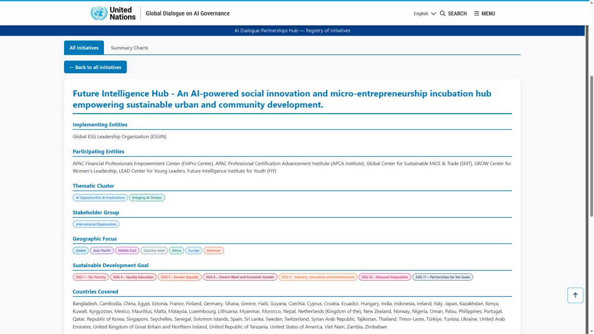

New York
Forum participation and partnership dialogue
Forum participation connecting ESGIN advisors, partnership dialogue, and SDG-oriented implementation themes.
Seattle-based coordination hub

FIH is managed by Global ESG Leadership Organization. Future Intelligence Hub by Global ESG Leadership Organization.
An AI-powered social innovation and micro-entrepreneurship incubation hub empowering sustainable urban and community development.
FIH is coordinated from Seattle as an early implementation initiative, connecting local pilots, learning programs, and cross-city conversations so innovators can move from learning and ideas toward practical implementation. Bangkok is active through the LearnHack 2026 education-prototype pathway.
Future Intelligence Hub is built for a practical gap: AI opportunities are expanding faster than many micro-entrepreneurs and local innovators can access tools, mentorship, capital, and implementation pathways.
Documented moments
ESGIN and FIH connect policy dialogue, youth leadership, responsible AI, ESG implementation, and cross-sector learning through selected convenings and partner-facing activities.
Forum participation connecting ESGIN advisors, partnership dialogue, and SDG-oriented implementation themes.

AI Dialogue Partnerships Hub - Registry of Initiatives
Public registry signal: ESGIN is named as the implementing entity, with thematic alignment across AI opportunities, bridging AI divides, and SDG-linked community development. This listing is a public registry record, not a statement of institutional affiliation or endorsement by the United Nations.
Future Intelligence Hub is described in the registry as an AI-powered social innovation and micro-entrepreneurship incubation hub empowering sustainable urban and community development. The initiative positions AI as the operating layer for screening potential, matching mentors, capital, and market opportunities, and helping city nodes replicate faster without being limited by manual incubation capacity.
The listed initiative identifies ESGIN as the implementing entity and connects FIH with participating entities across finance, professional certification, sustainable trade, women's leadership, young leaders, and youth-focused future intelligence.
Managed by ESGIN
The Global ESG Leadership Organization (ESGIN) is a UK-registered international organization advancing ESG, responsible AI, and cross-sector implementation initiatives. ESGIN operates as a multi-stakeholder platform connecting business leaders, sustainability practitioners, policymakers, financial institutions, academia, youth leaders, women leaders, and civil society actors.
ESGIN emphasizes implementation and institutional capacity-building. FIH is being developed as a city-level pathway for AI-powered social innovation and micro-entrepreneurship incubation. In 2026, FIH connects this role to Bangkok through LearnHack's education-prototype weekend in August, helping youth, women, and innovator ideas move toward prototypes and city-ready solution pathways.
Visit ESGINESGIN converts real-world sustainability experience into practical action frameworks, practitioner intelligence, and implementation pathways.
ESGIN connects FIH to public initiative registries and platform pathways, including the AI Dialogue Partnerships Hub and Doha Solutions Platform.
FIH is designed around a Global Host plus Local Implementation Partner model: shared methods, local execution, and attention to each city's real needs.
Operating model
FIH is not only a startup competition, training course, or co-working idea. It is being developed as a repeatable city-level model where learning, practice, creation, validation, and implementation can happen together, with Seattle serving as the coordination base for cross-city collaboration.
Workshops, mentorship, and hackathons help innovators define problems, design business models, plan resources, communicate value, and execute with teams.
FIH supports practical AI use while strengthening judgment, communication, creativity, leadership, upskilling, and reskilling.
Innovators connect city-specific challenges with the UN Sustainable Development Goals and responsible business thinking.
Community, education, business, civic, and funding conversations can help promising solutions move toward pilots, adoption pathways, organizations, or company formation.
City network
Seattle anchors the FIH system as a coordination base and opening local region. Bangkok is active through LearnHack 2026, with Taipei, Shanghai, and Dubai described as future city interests rather than active local hubs.
Locations
Upcoming events
Bangkok gives FIH an active 2026 learning and implementation moment through LearnHack in August for education prototypes.
FIH supports young builders as they turn 2036 future scenarios into clear proposals, optional prototypes, and one-minute English pitches.
Open ChallengeA Bangkok education hackathon by Future Intelligence Hub with Adam's House, inviting teams of three to five to build practical learning tools. It is free for accepted teams, no coding experience is required, and applications close July 26, 2026.
Open LearnHackA 2036 future-solutions online challenge that complements Bangkok LearnHack by expanding builder energy into future scenarios, FIH Future Blueprints, and one-minute English pitches.
Open ChallengeESGIN implementation areas
Capability-building for SME owners, professionals, women, youth, and emerging leaders through structured education and applied learning.
Applied sustainability knowledge through ESG in Action Monthly, implementation case learning, and practitioner-informed insight.
Practical solutions and policy contributions through UN DESA Doha Solutions Platform submissions, papers, and stakeholder consultations.
Regional chapters, cross-sector dialogues, peer learning programs, and FIH as ESGIN's urban innovation initiative.
Doha Solutions Platform initiatives
A mentorship initiative for youth development.
AI-driven ESG and SDG transformation for SMEs, enterprises, and communities.
Economic empowerment through inclusive financial literacy.
Related initiatives without screenshots
Impact-capital dialogue and ethical investor ecosystem building.
AI-supported regeneration and leadership pathways for women.
Inclusive enterprise and merchant support for women's economic participation.
Ethical, responsible, and safe digital citizenship for young people.
ESGIN's city innovation initiative for AI-powered implementation.
Impact framework and targets
Governance and contact
ESGIN is registered in the United Kingdom under Company No. 15443379, with registered office at 128 City Road, London EC1V 2NX. Seattle serves as the coordination base and opening local region for Future Intelligence Hub.
Governance principles listed in the organization introduction include transparency, accountability, integrity, responsible stewardship, and conflict-of-interest management.
Website: www.esgin.org | Contact: acc@esgin.org
Partner with FIH
FIH welcomes venue providers, public-sector collaborators, technology partners, foundations, mentor networks, and solution adopters for exploratory conversations.